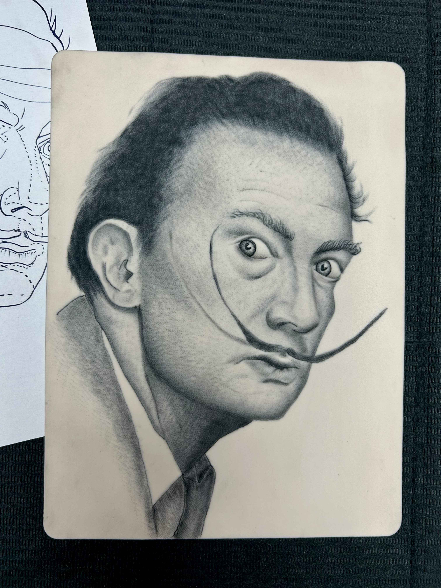
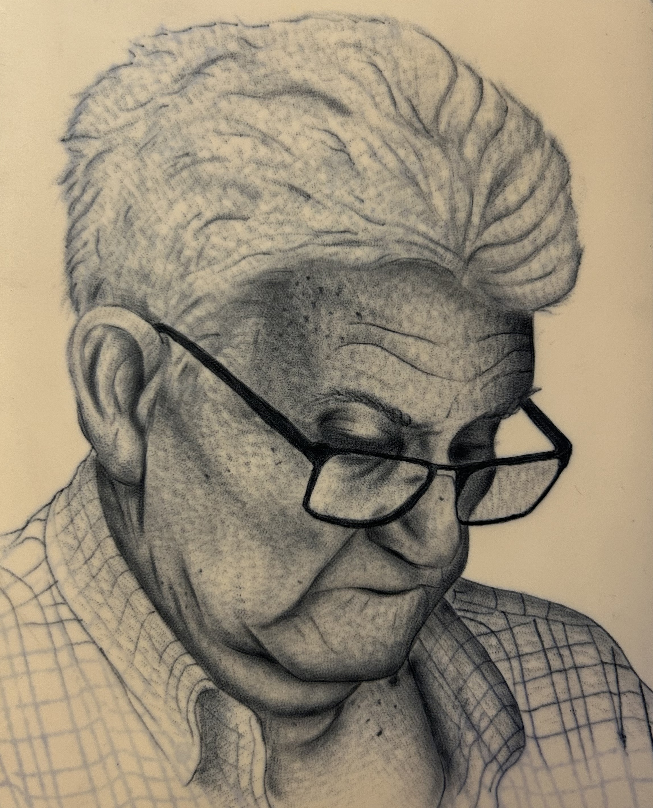
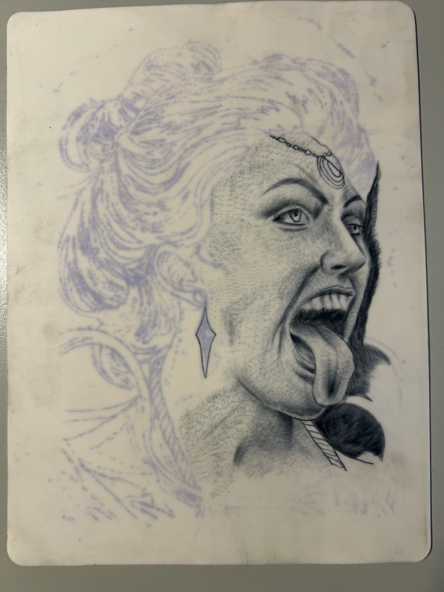

Porfolio / Realismo
En este apartado mostrare algunas practicas de realismo finalizadas y en proceso.

Salvador Dalí en piel sintética.

Retrato de Fermin, mi abuelo, en piel sintética.

Proceso de retrato.